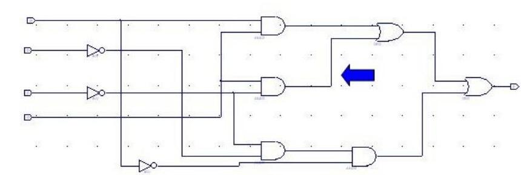
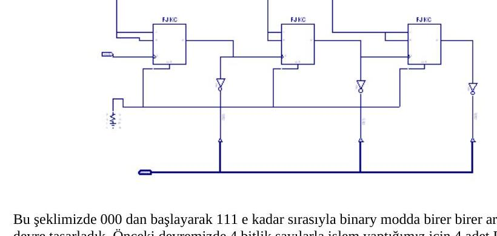
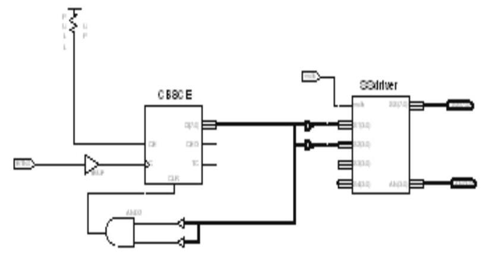
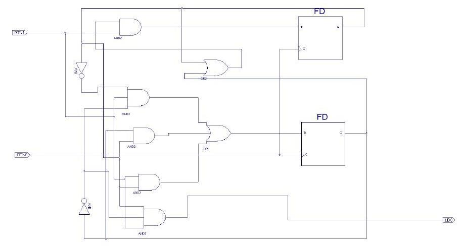

· EEM211
EEM211 Digital Logic Design: Fall 2006 Laboratory Reports (Xilinx, Experiments 2–10)
EEM211 – Sayısal Mantık Tasarımı · 27.12.2006 · 16.10.2026
This post collects the reports and preliminary work that classmates prepared for the Fall 2006 experiments of the EEM211 Digital Logic Design laboratory at Başkent University (October–December 2006). The experiments were designed in the Xilinx ISE WebPack environment using schematics or Verilog, verified with ModelSim simulation, and then loaded onto the Pegasus FPGA board. Most of the reports consist of a short results note and a simulation listing. Student names, numbers, and personal information in file names have been removed from the reports; the masked reports (A, B, and C denote the reports of three different classmates) can be downloaded as a ZIP at the end of the post.
Experiment 2: First circuit with Xilinx
The gate circuit in Figure 1 of the handout was drawn as a schematic in Xilinx and its waveform was examined by simulation; then the switches were assigned as inputs and an LED as the output, and the circuit was loaded onto the board. When output F is 1 the LED lights red, and when it is 0 the LED stays off. Finally, the Lab02.bit file was compiled and a different logic was tried: the input is a button and the output is an LED; the LED lights when the button is pressed.
Experiment 4: 4-bit adders (Verilog)
- Lab04a: The full adder module
fadderis defined behaviorally with the^,|,~,&operators; thefourbitadder1module is built hierarchically using fourfadderinstances. - Lab04b: The AND, OR, and complement (inverter) gates are written as separate modules,
fadderStr, which does the same job, is rebuilt with these three gates, andfourbitadder2is constructed with it.
Both designs worked as 4-bit binary adders when loaded onto the board.
Experiment 5: Prime number indicator and 2-bit comparator
- A circuit whose LED lights when the 4-bit number (1–15) entered with 4 switches is prime.
- A circuit that compares two 2-bit numbers (A and B): LD0 lights if B is greater, LD2 if B is smaller, and LD1 if A = B.
Both circuits were drawn as Xilinx schematics, their inputs and outputs were assigned, and they were tested on the Pegasus board.
Experiment 6: Adders and parity generators (with gate delays)
- A one-bit full adder was defined at the gate level with gate delays specified (a, b, cin → s, cout).
- A ripple carry adder that adds two 4-bit numbers was built with gate delays.
- A carry-lookahead adder was implemented structurally: the
PGgenandcarrygenmodules and thefourbitscarrylookaheadtop module that uses them.
The report's answers to the questions:
- Since the number of gates performing the logical operations in the adders is the same, the delay is also the same (1a).
- If a 16-bit ripple carry adder were designed instead of a 4-bit one, the delay would increase 4 times (1b).
- The delays in the simulation results are different; the carry-lookahead design (lab06-3) works faster (2a).
According to Xilinx's timing report, the longest path is 13.454 ns from cin to cout in the carry-lookahead design (6 logic levels; 7.640 ns logic, 5.814 ns route), and 13.499 ns from A<0> to cout in the ripple carry design (6 levels; 7.640 ns logic, 5.859 ns route). From this, the report concludes that carry-lookahead is faster.
Note: The difference between the delays of the two 4-bit designs is only 0.045 ns; the difference comes from placement in the FPGA (route delay), while the logic delays are the same. The advantage of carry-lookahead becomes more pronounced in wider adders.
Experiment 7: Faulty circuit, MUX-based design, and equality checker
There are three questions in the preliminary work and the report:
- In the given circuit, one wire was not making contact, so the circuit was producing a wrong signal. In the preliminary work, F' = a'c + bd' + ad' was found using a Karnaugh map; the corrected function is F = ad + c'd + a'b'c'. F is 1 for abcd = 0000, 0001, 0101, 1001, 1011, 1101, 1111.
- A function was implemented with three 2x1 MUXes: the circuit is both simpler and faster compared to the version built with gates. The report states that the circuit gives 1 for the inputs 0000, 0001, 0101, 1000, 1001, 1010, 1011, and produces an undefined signal at abcd = 1101.
- A circuit that outputs 1 if the two-bit numbers ab and cd are equal: F = a'b'c'd' + a'bc'd + ab'cd' + abcd (1 in only 4 of the 16 cases).

Experiment 8: Flip-flops and counters
The questions are the same as those of the handout "EEM 211 Experiment No: 8 – Flip-flops and circuit design" (last revised 2005), which is also in the laboratory folder. The answers in the two reports (A and B) are as follows:
- Frequency divider with a D flip-flop: Since the complement of the output is fed back to the D input, the output changes on every clock pulse; the output frequency is half of the input frequency. It can be used wherever the frequency needs to be halved.
- 4-bit asynchronous down counter: JK flip-flops (J = K = 1, pull-up) are chained together; the Q output of each flip-flop drives the clock input of the next. The frequency of each output from Q(0) to Q(3) is half that of the previous one; the circuit counts down from 1111 to 0000, decrementing by one. The CLR inputs are held at 0 with pull-downs.
- When inverters are placed between the Q outputs and the clock inputs, the circuit counts up; in report A, a counter counting from 000 to 111 was built with 3 flip-flops.
- The frequency division task in Figure 1 can be accomplished without modification by taking the output from the Q(0) output of the counter in Figure 3.

Experiment 9: Latches and flip-flops (20 December 2006)
- The counter output was connected to the seven-segment display driver (SSdriver); numbers increasing from 0 to 9 are seen on the display.
- When the AND gate was removed, a count decreasing from 9 to 0 is seen in the simulation.
In the conclusion of the report: when all connections of the AND gate are cut, the circuit counts from 0 to 99.

Experiment 10: Finite state machines (26–27 December 2006)
Two reports (B and C) describe the same circuit: the circuit produces a 1 output when it finds 1011 in the sequence sent to it; overlapping sequences are allowed. The circuit is built with two D flip-flops (FD), AND-OR gates, and two button inputs (BTN0, BTN1); report C also includes ModelSim's list output.
